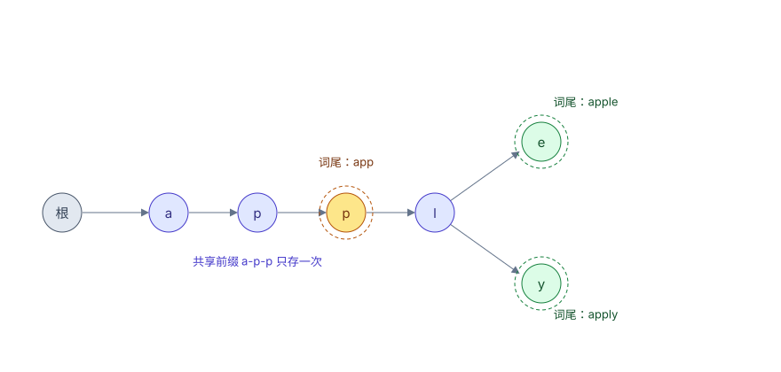
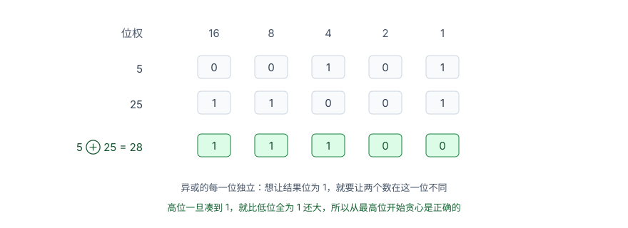
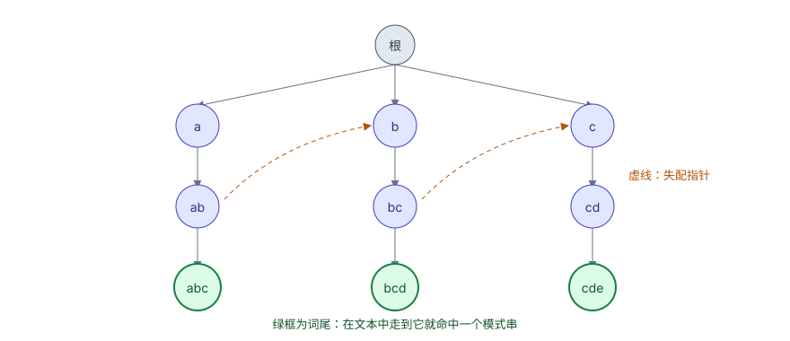

字典树（Trie）：按前缀组织字符串
搜索框里刚敲下“ap”，就要立刻列出所有以它开头的词。哈希表查完整单词很快，却对“前缀”无能为力。Trie 把单词的公共前缀合并成路径，让查找时间只取决于输入的长度。
前缀查询：哈希表做不到的事
一个搜索框的自动补全：用户输入“手”，就要弹出“手机”“手表”等建议。如果把这些词放在哈希表里，判断“手机”是否已收录是 O(1)（平均），但“列出所有以‘手’开头的词”却没有现成办法——哈希表把每个完整的 key 打散存放，失去了前缀之间的关系，只能逐个检查所有 key，最坏 O(n)。
词典很大时（例如 50 万个词），“查完整词”很快，但“按前缀列举”慢得不可接受。我们需要一种按字符顺序组织字符串的结构：查找时沿字符一路向下，与词典总大小无关，只看要查多长。这就是字典树（Trie，也称前缀树）。
| 操作 | 哈希表 | Trie |
|---|---|---|
| 查一个完整单词是否存在 | O(1) 平均 | O(k) |
| 列举所有以某前缀开头的词 | O(n)（需遍历全部 key） | O(k + 输出结果数) |
| 按字典序输出全部词 | 不支持（无序） | DFS 天然有序 |
这里的 k 是查询字符串的长度。哈希表的 O(1) 也是平均意义下的结论，碰撞或极端输入可能退化，这一点在讲哈希表的第 7 章已经强调过。下面先看 Trie 到底长什么样。
Trie：把公共前缀合并成路径
Trie 是一棵多叉树：除了根节点，每个节点代表一个字符，从根到一个节点的路径就拼出一个前缀。如果某个节点被标记为“词尾”，说明从根到它的路径恰好是一个完整的词。

class TrieNode:
def __init__(self):
self.children = {} # 字符 -> 子节点
self.is_end = False # 从根到这里是否构成完整词
class Trie:
def __init__(self):
self.root = TrieNode()
def insert(self, word):
node = self.root
for ch in word:
if ch not in node.children:
node.children[ch] = TrieNode()
node = node.children[ch]
node.is_end = True # 标在最后一个字符处两个容易混淆的点：其一，词尾标志一定要记在到达的那个节点上，否则“app”是词、“apple”也是词时就无法区分；其二，每个节点只是一个字符，不是整个字符串，字符串靠路径拼接。子节点用哈希表（dict）存储，适用于任意字符集；若只有小写字母，也可以用长度为 26 的数组省去哈希开销。
三个操作都是 O(k)
插入、查找、前缀匹配可以共用一个“沿字符串往下走”的辅助函数。走完之后，节点存不存在、是不是词尾，分别对应两种不同的问题。
def _find_node(self, s):
node = self.root
for ch in s:
if ch not in node.children:
return None # 路径断了，前缀不存在
node = node.children[ch]
return node
def search(self, word): # 完整词是否存在
node = self._find_node(word)
return node is not None and node.is_end
def starts_with(self, prefix): # 是否有词以该前缀开头
return self._find_node(prefix) is not None三个操作都只沿着字符串走 k 步，每步在子节点表里查一个字符（哈希表平均 O(1)）。所以代价只与 k 有关，与词典里有 100 个词还是 50 万个词无关——这正是它相对哈希表的优势所在。
注意 search 与 starts_with 只差一个 is_end 判断：如果树里有“apple”而没有“app”，那 search("app") 为假，但 starts_with("app") 仍为真。把这两个语义混用是新手最常见的错误。
自动补全：Trie + DFS
自动补全的做法分两步：先沿前缀走到对应节点，再从这个节点出发做一次 DFS，把下面所有词尾拼成完整词。前缀越长，需要遍历的子树越小。
def autocomplete(self, prefix):
node = self._find_node(prefix)
if node is None:
return []
results = []
self._collect(node, list(prefix), results)
return results
def _collect(self, node, path, results):
if node.is_end:
results.append("".join(path))
for ch, child in node.children.items():
path.append(ch)
self._collect(child, path, results) # 进入 / 回退
path.pop()复杂度是 O(k + 结果总长度)：走前缀 k 步，再输出结果。如果只想要前几个最热门的建议，会在节点上额外存热度，并限制遍历数量——这是工程上常见的优化，本章代码不展开。
看前缀展开出哪些词
词典固定为 apple、app、apply、application、apt、bat。输入一个前缀，观察补全结果。
二进制 Trie：异或最大值
Trie 不只用于字符串。把一个整数的二进制看作字符集为 {0,1} 的字符串，就得到二进制 Trie。经典题：给定数组，求两个数异或（XOR）的最大值（LeetCode 421）。暴力枚举数对是 O(n²)，二进制 Trie 可以做到 O(位数×n)。
想使异或结果最大，就要尽量让高位为 1。而高位为 1 意味着两个数在这一位不同。于是策略是：从最高位开始，每一步优先走与当前位相反的子树；只有在那一侧不存在时才走同侧。

class BinaryTrie:
def __init__(self):
self.root = [None, None] # 下标 0 / 1 对应两条分支
def insert(self, num):
node = self.root
for i in range(31, -1, -1): # 非负 32 位整数，高位在前
bit = (num >> i) & 1
if node[bit] is None:
node[bit] = [None, None]
node = node[bit]
def max_xor(self, num):
node, best = self.root, 0
for i in range(31, -1, -1):
bit = (num >> i) & 1
want = 1 - bit # 优先走相反位
if node[want] is not None:
best |= (1 << i) # 这一位异或结果为 1
node = node[want]
else:
node = node[bit] # 只能走同侧
return best
def find_max_xor(nums):
trie = BinaryTrie()
trie.insert(nums[0]) # 先插入第一个数
best = 0
for num in nums[1:]:
best = max(best, trie.max_xor(num))
trie.insert(num)
return best对 [3, 10, 5, 25, 2, 8] 调用返回 28（即 5 ⊕ 25）。为什么贪心是正确的？因为位权是 2 的幂，高位的一个 1 比所有低位加起来还大，所以从最高位依次“能取反就取反”不会错失最优解。总代价 O(32n) = O(n)（位数固定）。
AC 自动机：Trie + 失配指针
如果要在文本里同时查找很多个模式串（比如敏感词过滤、文章查重），逐个模式串扫描会重复遍历文本。AC 自动机（Aho–Corasick Automaton）把这件事降到一次扫描：先把所有模式串建成一棵 Trie，再为每个节点补上一条失配指针（fail 指针）。
fail 指针指向“当前路径的最长后缀”在 Trie 中对应的节点，思路和字符串匹配里的 KMP 前缀表一致。匹配文本时，能沿子节点走就往下走；走不下去就沿 fail 指针回退，直到能继续或回到根。这样文本每个字只被处理常数次。

要点是：AC 自动机 = Trie（存模式串）+ 失配指针（减少回退）。建立自动机的代价与模式串总长成正比，之后每扫一个文本字符都是摊还常数时间。完整的构建与匹配代码较长，本章不展开，只记住这个组合思路即可。
空间、哈希对比与选择
Trie 的“快”不是凭空的：它用额外空间换前缀查询能力。每个节点都要维护一个子节点表，当字符集大、且字符串很少共享前缀时，空间开销会明显大于哈希表。
| 维度 | 哈希表 | Trie |
|---|---|---|
| 完整词查找 | O(1) 平均 | O(k) |
| 前缀列举 | O(n)，需扫全部 key | O(k + 结果数) |
| 空间 | O(总字符数) | O(总节点数)；共享前缀时更省，节点开销更大 |
| 字典序输出 | 需额外排序 | DFS 天然有序 |
| 删除 | O(1) 平均 | O(k)，还要清理变空的节点 |
选择看需求：只判断完整词是否存在，哈希表更直接；要按前缀列举、自动补全、按字典序遍历，Trie 更合适。删除时要小心：不能直接删掉一个 is_end 就完事，得自下而上清掉不再携带任何词的节点，否则会泄漏空间、也会让前缀匹配出现幽灵路径。
另外两个边界：Trie 要求键能拆成有意义的“字符序列”，对无序或浮点键并不自然；工程里的字符串 Trie 通常还会加缓存和限流，本节的代码只演示最核心的结构。
带走三个判断准则
- 需要“按前缀列举”或“自动补全”时，优先考虑 Trie；只做完整匹配时哈希表更直接。
- Trie 的插入、查找、前缀匹配都是 O(k)，与词典大小无关；k 是查询串长度。
- “某个前缀存在”与“某个完整词存在”是两回事，靠
is_end区分。
继续学习与校验资料
- Trie — 定义、变体与典型应用
- cp-algorithms: Aho–Corasick — AC 自动机的失配指针构建
- 第 20 章：线段树与树状数组 — 另一类“按结构组织数据”的技巧
- 运行参考：
examples/trie.py；测试：tests/test_trie.py